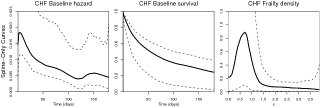

The splinesurv Package

FUNCTION
The splinesurv package contains utilities for nonparametric Bayesian analysis of clustered survival data using B-splines.
The baseline hazard function and frailty density are modeled using penalized B-splines, and estimated by MCMC. The method is very flexible, with options including adaptive knot selection by reversible-jump Monte-Carlo, and the inclusion of a parametrically specified component for either curve.
OBTAINING
To install the package directly within R type
install.packages("splinesurv", repos="http://R-Forge.R-project.org")
or see the R-forge project page for source and binary downloads.
DOCUMENTATION
Users should consult the documentation (PDF), which is also provided within the package.
Developers and statisticians should consult the annotated source code.
AUTHOR